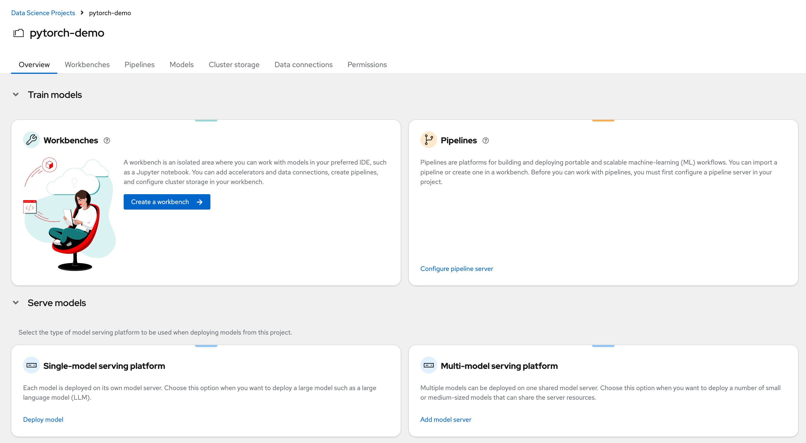

Setup Set up a Data Science project in RHAOI and create a new Workbench to work on the code. Create a new data science project Navigate to Data Science Projects and click Create data science project. Create a project called pytorch-demo. Create a new Workbench In the project dashboard, click Create workbench.  Enter pytorch-demo as the workbench name. Select the recommended PyTorch image. Leave the other configuration properties unchanged. Create and Save a PyTorch Model Data Exploration